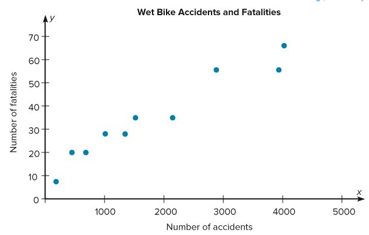

Paired data
(Scatter Plots)
Many times researchers are interested in determining if a relationship between two variables exists. In order to accomplish this, the researcher collects data consisting of two measures that are paired with each other.
Once a set of ordered pairs (x, y) of data values is collected, a graph can be drawn to represent the data. This graph is called a scatter plot or scatter diagram.
Scatter Plot is a graph of order pairs of data values that is used to determine if a relationship exists between the two variables.
Example:
